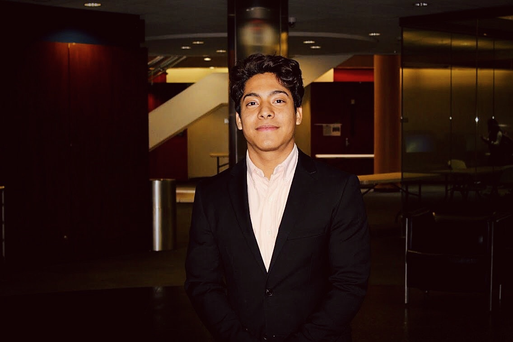
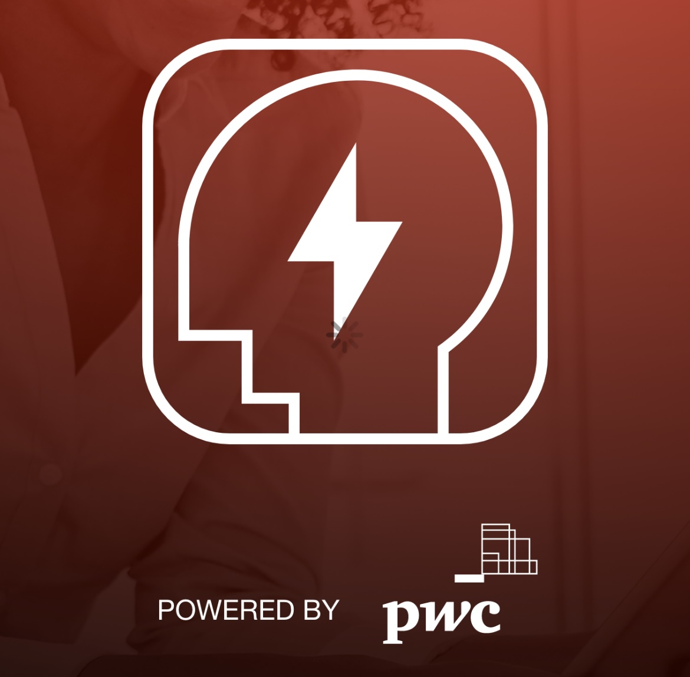
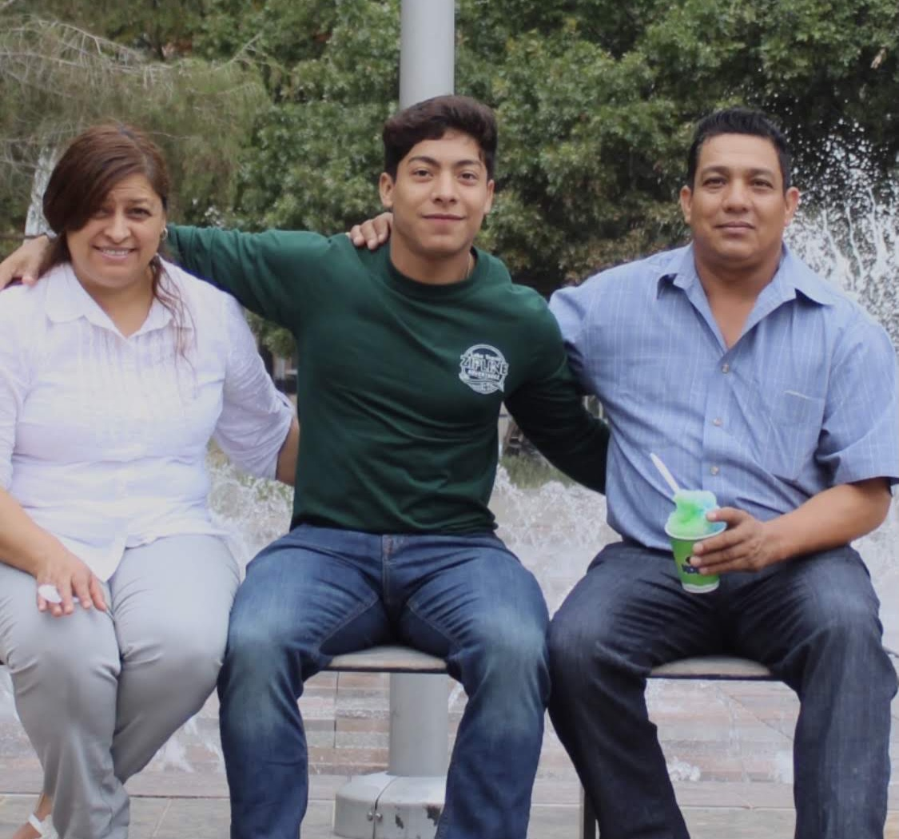
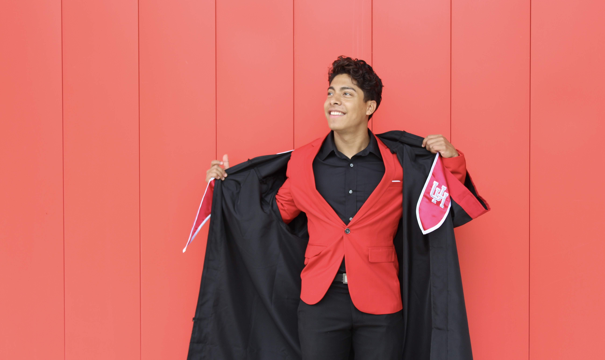

Intro | Profile

With over 3 years of experience in product management, I have a proven track record of leading successful teams and driving digital initiatives. I excel in project sprints, ensuring high-quality delivery, and managing collaborative team dynamics and stakeholder relationships. My expertise spans various industries, including product development, product growth, agile methodologies, UI/UX design,data analysis, stakeholder management and market research.
Passionate about finding solutions to complex problems, I have launched and shipped multi-million dollar software products while enhancing existing ones. I bring a strategic mindset, leadership skills, and a deep understanding of product management principles.
As a Lead Product Manager at PwC, I am confident in my ability to drive innovation, deliver exceptional results, and lead teams to success. With my skills, experience, and passion, I am ready to take on a senior leadership role in product management.
Currently, outside of my Product Management role I am actively engaged in addressing social and economic issues such as educational inequality,and economic empowerment. I am driven to make a significant impact and contribute to the growth and success of organizations.
Work| Projects

ProEdge: As the saying goes, when people thrive, businesses thrive. Empowering our people and our business through ProEdge closed digital skill gaps and inspired a culture of continuous learning throughout the firm. ProEdge helped identify skill gaps, created easy to deploy personalized learning plans based on business strategy, and provided users with courses and certifications that advanced their expertise and careers.
Achievements: Identified and closed 30% of skill gaps within the first six months of implementation, increased employee engagement with learning resources by 45%, and enhanced employee satisfaction through career advancement opportunities which reduced turnover by 20%.
Digital on Demand: Implemented digital assets that accelerated digital transformation, finance tranformation, and drove immediate financial value for clients. Through our inventory of curated and customizable assets, we enabled consultants to encourage clients to leverage bots, workflows and visualizations to scale, increase efficiency, and tranform their organizations.
Achievements: Delivered a 25% increase in client revenue within the first year, reduced operational costs by 18% through the use of automated bots/workflows, and consultants reported a 30% increase in client satisfaction scores.
Digital Fitness App: Throughout the pandemic we released and created our Digital Literacy App with users top of mind. The purpose of our app lies at the center of the firms' business responsibility values. Our effort to educate and inspire friends, colleagues, family, and the broader community through free and accessible educational resources (k-12) meant to digitally upskill users was well-received. With over 60 trending tech topics like AI, Blockchain, Cybersecurity, Robotics, IoT, Drones, AR/VR, and design thinking, users were able to enjoy personalized content, build a digital fitness plan, and digitally upskill.
Achievements: Reached over 100,000 downloads, users completed more than 250,000 courses, and received heartfelt testimonials from users about the app's impact and contributions during challenging times.
Change Navigator: Through Change Navigator, we empowered our firm and our people to analyze product and module adoption by identifying impacts, creating a best-fit change plan, and tracking progress against key rollout metrics. Change Navigator created data-driven transparency and drove effective change with powerful data collection tools that won the firm a Vanguard Leaderhip Award in change management.
Achievements: Accomplished an increase of 20% in product and module adoption rates and reduced change-related disruptions by a staggering 40%.
About

First-Generation: As the first in my family to graduate from high school and college, I feel a deep sense of responsibility and gratitude. I feel as though I carry not only my own dreams but also the hopes and aspirations of my grandparents and parents who sacrificed so much for my siblings and I.
Back in the '80s, my parents immigrated to the United States with nothing but a dream for a better future. It was a tough journey, filled with challenges and hardships. But they never lost hope. They taught us to find a way, even when doors seemed closed. "If you can't find a door, find a window, or make your own path," our father used to say.
Growing up, we didn't have many luxuries or privileges. But I saw it as an opportunity to focus on what truly mattered. I had fewer distractions, allowing me to push boundaries and strive for success. And I did just that. Despite the odds, I became the first in our family and extended family to graduate from high school and college.This achievement brought immense pride to my family, and it also ignited a fire within the rest of my siblings which led them to pursue their own individual careers. We feel a debt to our grandparents and parents, who worked tirelessly to give us a chance at a better life. We carry their dreams with us, and it fuels our determination to accomplish our own dreams.
As first-generation Americans, we've learned the value of hard work, perseverance, and the importance of education. We know that success is not handed to us on a silver platter. It's something we have to earn, day by day. And we're ready to take on that challenge.

In my mind, going to college was never in question. Financially however, my opportunities seemed pretty limited. I am always honest with anyone who asks me if the University of Houston was my dream school. In the beginning, it was actually my backup plan, I wanted to go away and experience college like most of my other classmates. Unfortunately, that was not an option for me, so I stayed close to home in Houston.
Restrospectively analyzing every small or major decision I made, attending the University of Houston was the single most important. The students who walk the UH halls aren't you typical college students. Those students come from low-income households, they are first generation students and the majority have been working full-time in order to pay for their studies. I was one of them.
Nonetheless, the University of Houston had different plans for me, as I was awarded a full scholarship to UH as a result of academic merit and financial need. That scholarship and recognition changed my life and it allowed me to complete school with zero debt and much sooner than anticipated. UH also taught me lessons in humility, pride, inclusion, perserverance, and most importantly grit. I found people there that not only looked like me, but they came from similar backgrounds and were working as hard as possible to cross the finish line the only way they knew how.
The University of Houston helped to build and shape me, and they gave me the gift of a free education for which I will be forever grateful.
Contact